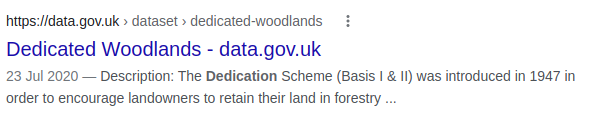

How applying clickbait and SEO techniques to your data can make it more discoverable
Jo Cook | Data Discovery Lead | Astun Technology
Who is this "Astun Technology" of which you speak?
Astun Technology was founded in 2006. We're based in Epsom, but our 25-ish staff are spread across Europe. We do spatial and data "stuff", based on an open source technology stack.
...and who are you?
Hi I'm Jo 👋
I've worked at Astun for over 10 years and lead on data discovery (metadata etc). I'm mad keen on problem solving and acting as an enabler. I also do "stuff" with OSGeo and the AGI.
Today's Problem
People need to find data
Metadata helps, but it's hard!
It's all about search engines
The Solution
Help people create metadata
Help search engines understand it
Get the dataset to appear high up in search results
Helping people create metadata
"Quality metadata is key to making data discoverable"
Some metadata elements can be easily derived from the dataset
We need help to derive some elements such as human-readable titles and descriptions
Auto-Summarise A deterministic river temperature model to prioritise management of riparian woodlands to reduce summer maximum river temperatures and a riparian woodland prioritisation score that looks to maximise the benefits of Riparian tree planting for protecting Scotland’s rivers from the adverse effects of climate change.
Help search engines understand your data
"I just go straight to Google"
Metadata can be mapped to machine-readable structured data so that search engines use the elements in the search results

Getting your data to appear high up in search results
Quick wins (aka clickbait)
Ensure that the title and abstract are present and follow basic SEO guidelines for length and language
Ensure you don't have metadata records with duplicate titles
Fix broken links
Feedback
Web analytics, Google trends, search statistics can provide useful insights into who's using your data
Give people the chance to submit feedback (good or bad)